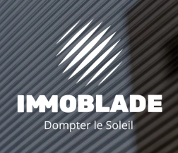
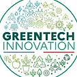
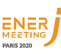
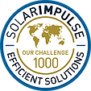
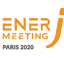
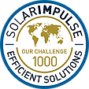
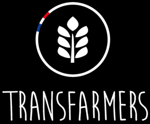
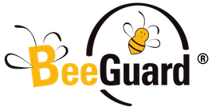

Immoblade
Étude par Nolan Jacquemont
Présentation
Immoblade est une start-up française de la Greentech créée en 2018, spécialisée dans les vitrages de protection solaire passifs, efficaces toute l'année, sans maintenance et permettant de limiter les consommations énergétiques. L’entreprise a été créée dans un but premier d’agir sur la transition écologique, en proposant des solutions low-tech. Elle propose des solutions adaptées aux particuliers et aux entreprises.
L’entreprise a reçu par ailleurs de nombreux prix, comme le Label Greentech Innovation du Ministère de la Transition Écologique en 2021, le prix de la CCI France - Suisse au Salon International des Inventions de Genève en 2018, ou encore d'autres comme le label EnerJ-Meeting et le label 1000 Efficient Solutions.
 



Présentation
Les Transfarmers est une société spécialisée dans le domaine des produits éco-conçus et éco-responsables.
Cette start-up française a été lancée en 2019 par . L'idée étant de créer un composteur pour pots de fleurs qui nourrit les plantes avec les épluchures.
Les Transfarmers produisent des composteurs pour pot de fleurs, ces produits sont destinés aux particuliers avant tout.
Les Transfarmers
Étude par James Sandall Robertson
BeeGuard
Étude par Cédric Pascal
Présentation
En 2016, Christian Lubat crée BeeGuard. Cette startup est spécialisée dans les outils d'aide pour les apiculteurs. Elle a été créée car le domaine agricole nécessite beaucoup d’adaptations des produits afin qu’ils puissent mieux convenir à leurs environnement.